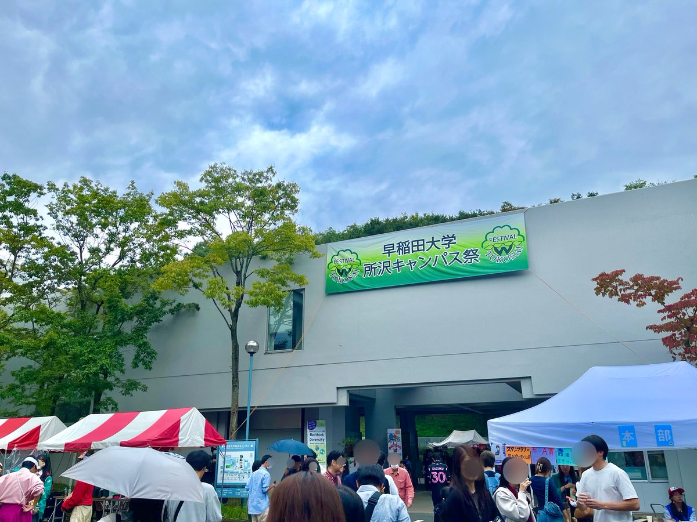
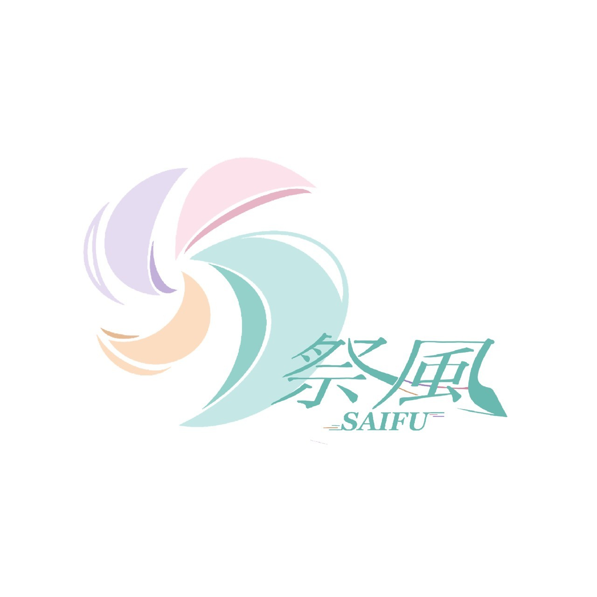
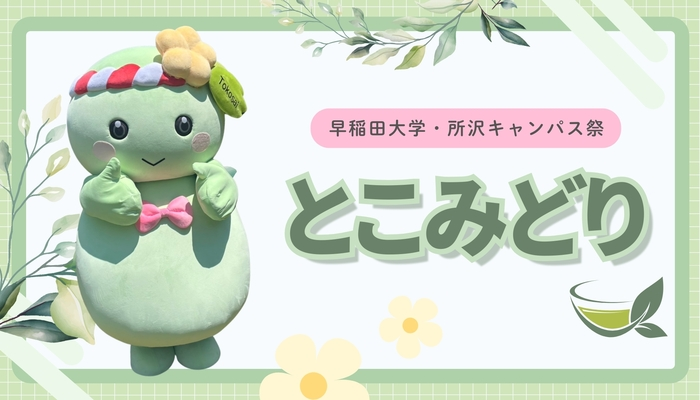

とこ祭とは
早稲田大学 所沢キャンパス祭（通称：所祭）は、埼玉県所沢市の緑豊かなキャンパスで毎年秋に開催される学園祭です。
人間科学部とスポーツ科学部の学生を中心に組織された実行委員会が、企画から運営までをゼロから全力で創り上げています。都心の学園祭とは異なり、地域の方々や子どもたちとの距離が非常に近く、アットホームで温かい雰囲気に包まれるのが所祭の最大の魅力です。

クラファン
10月25日（日）に開催される早稲田大学所沢キャンパス祭。学生550名が、キャンパスの枠を越え、地域の皆様とともに所沢を盛り上げる祭を目指しています。
より魅力的なステージ企画や展示、会場装飾、広報活動を実現するため、皆様のご支援をお願いいたします。

スローガン「祭風」
所沢キャンパスは、豊かな自然に囲まれた場所です。
所祭は、私立大学の文化祭の中でも珍しく、開催日がわずか一日だけという特別な形で行われています。
その一日にすべてを懸け、私たちは本気で向き合います。
広大な森に風が吹き荒れるキャンパスの中で、実行委員一人ひとりが全力を尽くし、想いを形にしていく。
その姿勢こそが、このスローガンに込められています。

とこみどり
とこ祭公式マスコットキャラクター
- 誕生日
- 10/5
- 趣味
- 写真を撮ること
- 好きなもの
- お茶、綺麗な景色、笑顔
- 嫌いなもの
- 激しい気温の変化